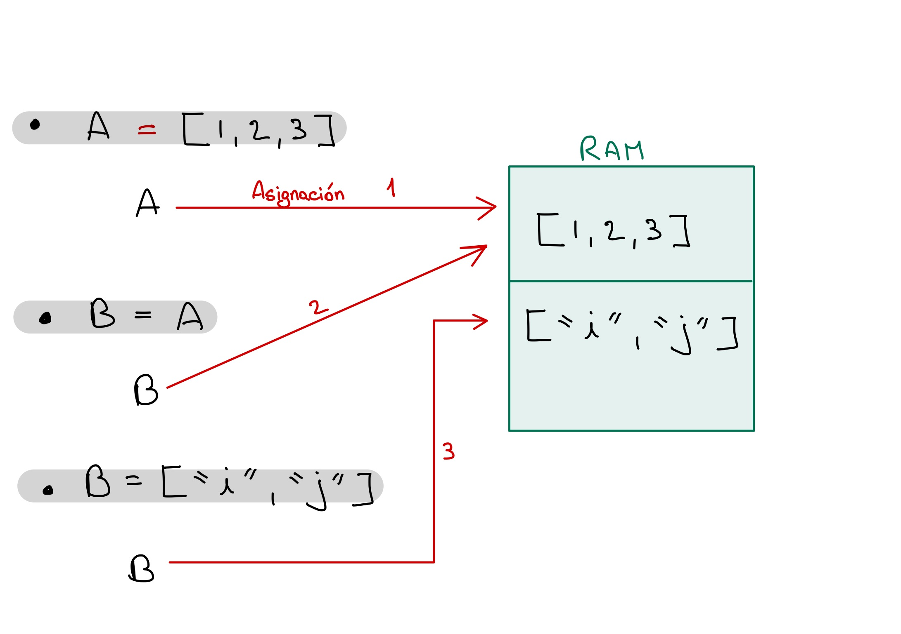

2. Sintaxis, variables y operadores¶
2.1. Sintaxis¶
En general Python usa una sintaxis en forma de funciones: \(f(x,y,z)\)
print(1,2,3, 'hola', 'UDLA')
range(10)
1 2 3 hola UDLA
range(0, 10)
Python siempre comienza numerando desde 0, es decir el primer elemento de un arreglo tendrá como índice el número 0. Esta es una característica que Python comparte con la mayoría de lenguajes de programación fuertes (C, Java, Swift, PHP, etc.). El porqué, está fuera del alcance del curso pero si desean entender más sobre este tema, pueden leer el siguiente artículo: Array Indexing: 0-based or 1-based? o el siguiente ensayo desde una perspectiva matemática: Why numbering should start at zero.
Podemos obtener la documentación (docstring) de una función utilizando el signo ? antes de la función:
?range
Para delimitar texto se puede ocupar doble o simple comillas: “hola” , ‘hola’
Todo lo que esté después del signo numeral # se lee como comentario.
# Esto es un comentario
print('Esto es código. La raíz cuadrada de 2 es =', 2**0.5) # Esto también es un comentario
# Esta línea también es comentario
Esto es código. La raíz cuadrada de 2 es = 1.4142135623730951
# Algunas funciones específicas se pueden encadenar:
texto = "Investigación"
print(texto.upper().lower())
investigación
# una larga línea de código se puede dividir con backslash \
print("hola"\
.upper())
HOLA
print('hola' . upper())
HOLA
La sangría son los espacios al comienzo de una línea de código.
En otros lenguajes de programación la sangría se usa solo por legibilidad (e.g. R, Stata), pero en Python es muy importante.
Python usa sangría para indicar bloques de código.
def cubo_mas_uno(x):
c = x * x * x
c = c + 1
return c
cubo_mas_uno(3)
28
2.1. Introducción a datos¶
Una variable es una referencia (o vínculo) que hacemos entre un nombre y un espacio en la memoria.
Memory reference¶

Tipos de variables¶
Numéricas¶
enteros = 12345
flotantes = 1.234
complejos = complex(1.2, 3.4)
print(enteros)
print(flotantes)
print(complejos)
12345
1.234
(1.2+3.4j)
String (Texto)¶
texto1 = 'Hola UDLA'
print(texto1)
Hola UDLA
# Multiples líneas de texto
texto_lineas = """
String
en
multiples
líneas
"""
print(texto_lineas)
String
en
multiples
líneas
# Se puede incluir caracteres especiales con backslash \:
texto_espacio = "línea 1 \n línea 2" # \n = new line
texto_tab = "texto 1 \t texto 2 \t texto3 3" # \t = tabulación
print(texto_espacio)
print("-------------------------")
print(texto_tab)
línea 1
línea 2
-------------------------
texto 1 texto 2 texto3 3
Pregunta
¿Por qué “línea 1” y “línea 2” tienen sangrías diferentes?
# El texto puede tomar el valor de una variable (formatted text)
numero = 12
texto_formato = f"La raíz de {numero} es {numero**0.5} y su cubo es {numero**3}"
print(texto_formato)
La raíz de 12 es 3.4641016151377544 y su cubo es 1728
Colecciones de datos (o datos estructurados)¶
Son agrupaciones que nos permiten asignar multiples datos a una sola variable.
Existen 4 tipos de colecciones:
Ordenada |
Indexada |
Modificable |
Permite duplicados |
|
|---|---|---|---|---|
Lista |
X |
X (auto) |
X |
X |
Tupla |
X |
X (auto) |
X |
|
Diccionario |
X |
X (manual) |
X |
|
Conjunto |
X |
Se declaran de la siguiente manera:
# LISTAS
list1 = [1, 2, 3, 1, 2, "a", "b", "a", "b"]
# TUPLAS
tuple1 = (1, 2, 3, 4, 5, "a", "b", 1)
# DICCIONARIOS
dict1 = {"ECU": "Ecuador", "COL": "Colombia", "PER": "Perú", "BOL": "Bolivia"}
# SETS
set1 = set(list1)
print(list1)
print(tuple1)
print(dict1)
print(set1)
[1, 2, 3, 1, 2, 'a', 'b', 'a', 'b']
(1, 2, 3, 4, 5, 'a', 'b', 1)
{'ECU': 'Ecuador', 'COL': 'Colombia', 'PER': 'Perú', 'BOL': 'Bolivia'}
{1, 2, 3, 'a', 'b'}
A estas colecciones se les considera estructuras unidemensionales. Sin embargo, podemos representar N dimensiones al anidarlar (nested lists).
matriz = [[3, 4, 5], [2, 6, 7], [0, 1, 9]]
notas = {"A0001": [10, 10, 8, 9, 8], "A0002": [3, 1, 5, 7.4, 8]}
print(matriz)
print(notas)
[[3, 4, 5], [2, 6, 7], [0, 1, 9]]
{'A0001': [10, 10, 8, 9, 8], 'A0002': [3, 1, 5, 7.4, 8]}
La idea es que, al ser un lenguaje dinámico, no hay restricción en lo que se puede agrupar en una colección de datos.
Slicing¶
Podemos seleccionar datos específicos de las colecciones utilizando el método slicing. Tener en cuenta que la numeración empieza en 0.
list1 = [1, 2, 3, "a", "b", "c"]
Lista
key |
-key |
Value |
|---|---|---|
0 |
-6 |
1 |
1 |
-5 |
2 |
2 |
-4 |
3 |
3 |
-3 |
a |
4 |
-2 |
b |
5 |
-1 |
c |
Diccionario
Key |
Value |
|---|---|
ECU |
Ecuador |
COL |
Colombia |
PER |
Perú |
BOL |
Bolivia |
# Seleccionar elementos
print( list1[0] )
print( list1[2] )
print( list1[5] )
1
3
c
# Seleccionar rangos
print( list1[3:7] )
print( list1[2:] )
['a', 'b', 'c']
[3, 'a', 'b', 'c']
# Seleccionar desde el último elemento
print( list1[-4] )
3
# Diccionario
print(dict1["COL"])
Colombia
Pregunta
En la lista1 seleccione asigne la letra “z” a los dos elementos interm
Si las colecciones son modificables (o mutables), podemos modificar datos específicos
lista2 = [1, 2, 3, "a", "b", "c"]
Pregunta
En la lista1 seleccione asigne la letra “z” a los dos elementos interm